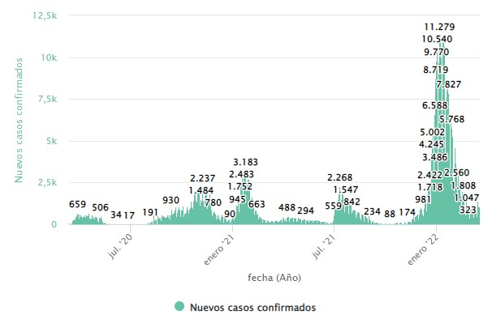

CONTROLES
Fecha:
Provincias:
Datos:
GRÁFICO CON INFORMACIÓN COMPLETA
GRÁFICO DE LOS MEDIOS
Fecha: 22/02/2022
Hospitalizados
Positividad
Vacunación
Riesgo alto: >25% hospitalizados
Riesgo medio: 15%-25% hospitalizados
Riesgo bajo: <15% hospitalizados